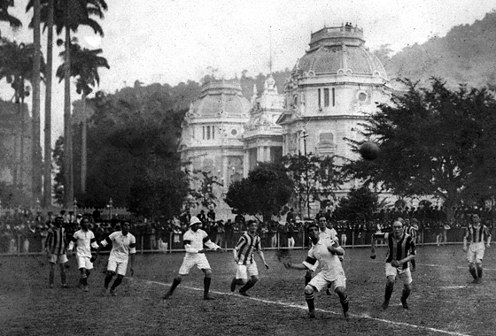

Boas-vindas a
 Quero conhecer!História da Seleção Canarinha
A Seleção Brasileira foi formada pela primeira vez em 21 de julho de 1914. Fez seu primeiro jogo contra o Exeter City, da Inglaterra, no campo do Fluminense Football Club, em 21 de julho daquele ano. O resultado da partida é disputado.[20] Algumas fontes afirmam que o Exeter perdeu por 2 a 0 para o Brasil,[21][22] com gols de Oswaldo Gomes e Osman, enquanto outras afirmam um empate de 3 a 3,[23][24] particularmente na mídia inglesa à época.[25] A equipe jogou ainda naquele ano em dois jogos contra a Seleção Argentina, sendo um amistoso em 20 de setembro e outro oficialmente, valendo a Copa Roca em 27 de setembro,[26] competição que visava a aproximar mais estes dois países. O Brasil venceu por 1 a 0 em Buenos Aires (gol de Rubens Salles), consagrando-se campeão do torneio,[27] sendo esse o primeiro de vários títulos conquistados pela seleção Canarinho.[28] O primeiro título relevante conquistado pela Seleção Brasileira foi o Campeonato Sul-Americano de 1919, atual Copa América,[29] com Friedenreich marcando o gol do título sobre o Uruguai, no Estádio das Laranjeiras construído pelo Fluminense para esta ocasião, já que o governo brasileiro não tinha o dinheiro para financiar este evento internacional. Em 1922, o Fluminense ampliou o seu estádio e a Seleção Brasileira conquistou o segundo título relevante de sua história, o bicampeonato do Sul Americano de Seleções. O Brasil é a única nação a ter se classificado para todas as edições da Copa do Mundo. Contudo, as participações iniciais do país estavam longe de serem bem sucedidas. Isso se deve à disputa interna do futebol brasileiro sobre o profissionalismo. Esse fato fez com que a Confederação Brasileira de Futebol fosse incapaz de convocar times com a força total. Em particular, disputas entre as federações estaduais de São Paulo e do Rio de Janeiro (as duas mais importantes da época) significavam que a seleção seria composta por jogadores vindos de apenas uma das federações. Seleção Brasileira embarcando para a Copa do Mundo de 1934. Foto: Arquivo Nacional . O Brasil caiu no grupo mais difícil, com Inglaterra, URSS e Áustria. Eles bateram a Áustria por 3-0 na primeira partida, então empataram em 0-0 com a Inglaterra. Os brasileiros estavam preocupados com sua partida contra os soviéticos, que tinham um físico excepcional e eram um dos favoritos a ganhar o torneio; sua estratégia era arriscar no começo do jogo para tentar marcar um gol logo no início. Antes da partida, os líderes do time, Bellini, Nílton Santos e Didi, falaram com o treinador e o persuadiram a fazer três substituições que seriam cruciais para o Brasil ganhar dos soviéticos e a Copa: Zito, Garrincha e Pelé começariam o jogo contra a União Soviética. No apito inicial, eles passaram a bola para Garrincha que passou por três jogadores antes de acertar a trave com um chute. Eles mantiveram a pressão sem descanso e, após três minutos, que mais tarde seriam chamados de "os três minutos mais grandiosos da história do futebol", Vavá deu ao Brasil a liderança no placar. Eles ganharam a partida por 2 a 0. Pelé marcou o único gol da partida das quartas de final contra o País de Gales, e eles bateram a França por 5-2 nas semifinais. .